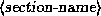
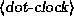
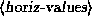
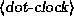
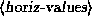
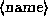

Setting up XFree86 is not difficult in most cases. However, if you happen to be using hardware for which drivers ar under development, or wish to obtain the best performance or resolution from an accelerated graphics card, configuring XFree86 can be somewhat time-consuming.
In this section we will describe how to create and edit the XF86Config file, which configures the XFree86 server. In many cases it is best to start out with a ``basic'' XFree86 configuration, one which uses a low resolution, such as 640x480, which should be supported on all video cards and monitor types. Once you have XFree86 working at a lower, standard resolution, you can tweak the configuration to exploit the capabilities of your video hardware. The idea is that you want to know that XFree86 works at all on your system, and that something isn't wrong with your installation, before attempting the sometimes difficult task of setting up XFree86 for real use.
In addition to the information listed here, you should read the following documentation:
The main XFree86 configuration file is /usr/X11R6/lib/X11/XF86Config. This file contains information on your mouse, video card parameters, and so on. The file XF86Config.eg is provided with the XFree86 distribution as an example. Copy this file to XF86Config and edit it as a starting point.
The XF86Config man page explains the format of this file in detail. Read this man page now, if you have not done so already.
We are going to present a sample XF86Config file, piece by piece. This file may not look exactly like the sample file included in the XFree86 distribution, but the structure is the same.
 Note that the XF86Config file format may change
with each version of XFree86; this information is only valid for
XFree86 version 3.1.
Note that the XF86Config file format may change
with each version of XFree86; this information is only valid for
XFree86 version 3.1.
Also, you should not simply copy the configuration file listed here to your own system and attempt to use it. Attempting to use a configuration file which doesn't correspond to your hardware could drive the monitor at a frequency which is too high for it; there have been reports of monitors (especially fixed-frequency monitors) being damaged or destroyed by using an incorrectly configured XF86Config file. The bottom line is this: Make absolutely sure that your XF86Config file corresponds to your hardware before you attempt to use it.
Each section of the XF86Config file is surrounded by the pair of lines Section ""...EndSection. The first part of the XF86Config file is Files, which looks like this:
Section "Files"
RgbPath "/usr/X11R6/lib/X11/rgb"
FontPath "/usr/X11R6/lib/X11/fonts/misc/"
FontPath "/usr/X11R6/lib/X11/fonts/75dpi/"
EndSection
The RgbPath line sets the path to the X11R6 RGB color database, and each FontPath line sets the path to a directory containing X11 fonts. In general you shouldn't have to modify these lines; just be sure that there is a FontPath entry for each font type that you have installed (that is, for each directory in /usr/X11R6/lib/X11/fonts).
The next section is ServerFlags, which specifies several global flags for the server. In general this section is empty.
Section "ServerFlags"
# Uncomment this to cause a core dump at the spot where a signal is
# received. This may leave the console in an unusable state, but may
# provide a better stack trace in the core dump to aid in debugging
# NoTrapSignals
# Uncomment this to disable the <Crtl><Alt><BS> server abort sequence
# DontZap
EndSection
Here, we have all lines within the section commented out.
The next section is Keyboard. This should be fairly intuitive.
Section "Keyboard"
Protocol "Standard"
AutoRepeat 500 5
ServerNumLock
EndSection
Other options are available as well---see the XF86Config file if you wish to modify the keyboard configuration. The above should work for most systems.
The next section is Pointer which specifies parameters for the mouse device.
Section "Pointer"
Protocol "MouseSystems"
Device "/dev/mouse"
# Baudrate and SampleRate are only for some Logitech mice
# BaudRate 9600
# SampleRate 150
# Emulate3Buttons is an option for 2-button Microsoft mice
# Emulate3Buttons
# ChordMiddle is an option for some 3-button Logitech mice
# ChordMiddle
EndSection
The only options that you should concern yourself with now are Protocol and Device. Protocol specifies the mouse protocol that your mouse uses (not the make or brand of mouse). Valid types for Protocol (under Linux---there are other options available for other operating systems) are:
Device specifies the device file where the mouse can be accessed. On most Linux systems, this is /dev/mouse. /dev/mouse is usually a link to the appropriate serial port (such as /dev/cua0) for serial mice, or to the appropriate busmouse device for busmice. At any rate, be sure that the device file listed in Device exists.
The next section is Monitor, which specifies the characteristics of your monitor. As with other sections in the XF86Config file, there may be more than one Monitor section. This is useful if you have multiple monitors connected to a system, or use the same XF86Config file under multiple hardware configurations. In general, though, you will need a single Monitor section.
Section "Monitor"
Identifier "CTX 5468 NI"
# These values are for a CTX 5468NI only! Don't attempt to use
# them with your monitor (unless you have this model)
Bandwidth 60
HorizSync 30-38,47-50
VertRefresh 50-90
# Modes: Name dotclock horiz vert
ModeLine "640x480" 25 640 664 760 800 480 491 493 525
ModeLine "800x600" 36 800 824 896 1024 600 601 603 625
ModeLine "1024x768" 65 1024 1088 1200 1328 768 783 789 818
EndSection
The Identifier line is used to give an arbitrary name to the Monitor entry. This can be any string; you will use it to refer to the Monitor entry later in the XF86Config file.
they are listed below.
HorizSync specifies the valid horizontal sync frequencies for your monitor, in kHz. If you have a multisync monitor, this can be a range of values (or several comma-separated ranges), as seen above. If you have a fixed-frequency monitor, this will be a list of discrete values, such as:
HorizSync 31.5, 35.2, 37.9, 35.5, 48.95
Your monitor manual should list these values in the technical specifications section. If you do not have this information available, you should either contact the manufacturer or vendor of your monitor to obtain it. There are other sources of information, as well;
VertRefresh specifies the valid vertical refresh rates (or vertical synchronization frequencies) for your monitor, in Hz. Like HorizSync this can be a range or a list of discrete values; your monitor manual should list them.
HorizSync and VertRefresh are used only to double-check that the monitor resolutions that you specify are in valid ranges. This is to reduce the chance that you will damage your monitor by attempting to drive it at a frequency for which it was not designed.
The ModeLine directive is used to specify a single resolution mode for your monitor. The format of ModeLine is
ModeLine 


 is an arbitrary string, which you will use to refer to the
resolution mode later in the file.  is the driving
clock frequency, or ``dot clock'' associated with the resolution mode.
A dot clock is usually specified in MHz, and is the rate at which the
video card must send pixels to the monitor at this resolution.
 and are four numbers each
which specify when the electron gun of the monitor should fire, and
when the horizontal and vertical sync pulses fire during a sweep.
is an arbitrary string, which you will use to refer to the
resolution mode later in the file.  is the driving
clock frequency, or ``dot clock'' associated with the resolution mode.
A dot clock is usually specified in MHz, and is the rate at which the
video card must send pixels to the monitor at this resolution.
 and are four numbers each
which specify when the electron gun of the monitor should fire, and
when the horizontal and vertical sync pulses fire during a sweep.
How can you determine the ModeLine values for your monitor?
The file VideoModes.doc, included with the XFree86 distribution,
describes in detail how to determine these values for each resolution
mode that your monitor supports. First of all,  must
correspond to one of the dot clock values that your video card can
produce. Later in the XF86Config file you will specify these
clocks; you can only use video modes which have a
must
correspond to one of the dot clock values that your video card can
produce. Later in the XF86Config file you will specify these
clocks; you can only use video modes which have a  value
supported by your video card.
value
supported by your video card.
There are two files included in the XFree86 distribution which may include ModeLine data for your monitor. These files are modeDB.txt and Monitors, both of which are found in /usr/X11R6/lib/X11/doc.
You should start with ModeLine values for the VESA standard monitor timings, which most monitors support. modeDB.txt includes timing values for VESA standard resolutions. In that file, you will see entries such as
# 640x480@60Hz Non-Interlaced mode
# Horizontal Sync = 31.5kHz
# Timing: H=(0.95us, 3.81us, 1.59us), V=(0.35ms, 0.064ms, 1.02ms)
#
# name clock horizontal timing vertical timing flags
"640x480" 25.175 640 664 760 800 480 491 493 525
This is a VESA standard timing for a 640x480 video mode. It uses a dot clock of 25.175, which your video card must support to use this mode (more on this later). To include this entry in the XF86Config file, you'd use the line
ModeLine "640x480" 25.175 640 664 760 800 480 491 493 525
Note that the  argument to ModeLine (in this
case "640x480") is an arbitrary string---the convention
is to name the mode after the resolution, but  can
technically be anything descriptive which describes the mode to you.
can
technically be anything descriptive which describes the mode to you.
For each ModeLine used the server will check that the specifications for the mode fall within the range of values specified with Bandwidth, HorizSync and VertRefresh. If they do not, the server will complain when you attempt to start up X (more on this later). For one thing, the dot clock used by the mode should not be greater than the value used for Bandwidth. (However, in many cases it is safe to use modes with a slightly higher bandwidth than your monitor can support.)
If the VESA standard timings do not work for you (you'll know after trying to use them later) then the files modeDB.txt and Monitors include specific mode values for many monitor types. You can create ModeLine entries from the values found in those two files as well. Be sure to only use values for the specific model of monitor that you have. Note that many 14 and 15-inch monitors cannot support higher resolution modes, and often resolutions of 1024x768 at low dot clocks. This means that if you can't find high resolution modes for your monitor in these files, then your monitor probably does not support those resolution modes.
If you are completely at a loss, and can't find working ModeLine values for your monitor, you can follow the instructions in the VideoModes.doc file included in the XFree86 distribution to generate ModeLine values from the specifications listed in your monitor's manual. While your mileage will certainly vary when attempting to generate ModeLine values by hand, this is a good place to look if you can't find the values that you need. VideoModes.doc also describes the format of the ModeLine directive and other aspects of the XFree86 server in gory detail.
Lastly, if you do obtain ModeLine values which are almost, but not quite, right, then it may be possible to simply modify the values slightly to obtain the desired result. For example, if while running XFree86 the image on the monitor is shifted slightly, or seems to ``roll'', you can follow the instructions in the VideoModes.doc file to try to fix these values. Also, be sure to check the knobs and controls on the monitor itself! In many cases it is necessary to change the horizontal or vertical size of the display after starting up XFree86 in order for the image to be centered and be of the appropriate size. Having these controls on the front of the monitor can certainly make life easier.
You shouldn't use monitor timing values or ModeLine
values for monitors other than the model that you own. If you attempt to
drive the monitor at a frequency for which it was not designed, you can
damage or even destroy it.
The next section of the XF86Config file is Device, which specifies parameters for your video card. Here is an example.
Section "Device"
Identifier "#9 GXE 64"
# Nothing yet; we fill in these values later.
EndSection
This section defines properties for a particular video card. Identifier is an arbitrary string describing the card; you will use this string to refer to the card later.
Initially, you don't need to include anything in the Device section, except for Identifier. This is because we will be using the X server itself to probe for the properties of the video card, and entering them into the Device section later. The XFree86 server is capable of probing for the video chipset, clocks, RAMDAC, and amount of video RAM on the board.
Before we do this, however, we need to finish writing the XF86Config file. The next section is Screen, which specifies the monitor/video card combination to use for a particular server.
Section "Screen"
Driver "Accel"
Device "#9 GXE 64"
Monitor "CTX 5468 NI"
Subsection "Display"
Depth 16
Modes "1024x768" "800x600" "640x480"
ViewPort 0 0
Virtual 1024 768
EndSubsection
EndSection
The Driver line specifies the X server that you will be using. The value values for Driver are:
The Device line specifies the Identifier of the Device section corresponding to the video card to use for this server. Above, we created a Device section with the line
Identifier "#9 GXE 64"
Therefore, we use "#9 GXE 64" on the Device line here.
Similarly, the Monitor line specifies the name of the Monitor
section to be used with this server. Here, "CTX 5468 NI" is
the Identifier used in the Monitor section described above.
Subsection "Display" defines several properties of the
XFree86 server corresponding to your monitor/video card combination.
The XF86Config file describes all of these options in detail;
most of them are icing on the cake and not necessary to get the system
working.
The options that you should know about are:
"1024x768", "800x600", and "640x48"0.
Therefore, we use a Modes line of
Modes "1024x768" "800x600" "640x480"
The first mode listed on this line will be the default when XFree86
starts up. After XFree86 is running, you can switch between the modes
listed here using the keys - - and
- and
 -
- -.
-.
It might be best, when initially configuring XFree86, to use lower resolution video modes, such as 640x480, which tend to work on most systems. Once you have the basic configuration working you can modify XF86Config to support higher resolutions.
The Virtual feature is a nice way to utilize the memory of your video card, but it is rather limited. If you want to use a true virtual desktop, we suggest using fvwm, or a similar window manager, instead. fvwm allows you to have rather large virtual desktops (implemented by hiding windows, and so forth, instead of actually storing the entire desktop in video memory at once). See the man pages for fvwm for more details about this; most Linux systems use fvwm by default.
Many other options for this section exist; see the XF86Config man page for a complete description. In practice these other options are not necessary to get XFree86 initially working.